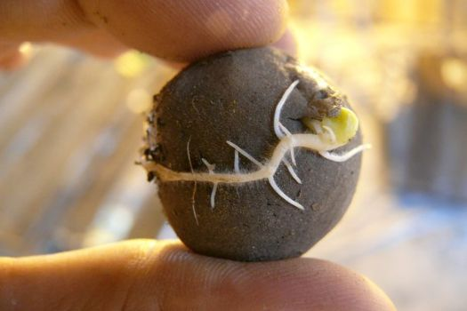

Bomba de Semillas
No se necesita cavar agujeros para plantar, con una bomba de semillas es posible esparcir vida.

Materiales
Tierra negra
Arcilla
Agua
Semillas de huerta
Aire
Desarrollo
Mezclar partes de tierra negra con un poco de arcilla
Agregar agua hasta formar una masa moldeable
Extenderla y agregarle las semillas
Volver a amasar, una vez bien comprimida, hacer pequeñas bolitas
Dejarlas secar en un lugar con aire (sin sol)
Una vez duras, arrojarlas en terreno baldío
Llevar seguimiento del desarrollo de la planta
Materiales
Desarrollo
Volver al inicio